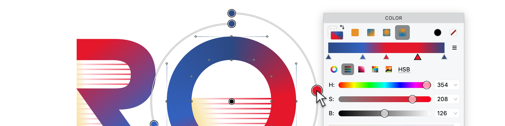

The long, awkward adolescence of color fonts
Type spent five hundred years in black and white. Then mobile phones demanded emoji, and four large companies sat down separately and proposed four entirely incompatible ways to put color into a font. The decade since has been an awkward growing-up.

The four-way standoff¶
In 2013, four proposals landed at the OpenType committee in roughly the same year. Apple offered sbix, which essentially shoved PNG images into the font at several sizes, one per emoji. Google offered CBDT/CBLC, which was another flavour of bitmap embedding, more compact, similarly raster. Microsoft offered COLR/CPAL, a clever lightweight idea — stack solid-colored vector layers, reuse the existing outline machinery, ship tiny files. Adobe and Mozilla offered SVG-in-OpenType: embed entire SVG documents per glyph, allow gradients, transforms, even animation, and demand a renderer with most of a browser’s graphics stack.
None of these were silly. All of them solved different problems. Together they were a mess. A font developer who wanted the same emoji to render on iOS, Android, Windows, and the web had to export three formats and pray. Some renderers ignored the table you cared about and used the one you had not bothered with. Diagnosis was a hobby.
The bitmap problem¶
sbix and CBDT shipped what Apple’s emoji needed: photographic-looking glyphs, fixed sizes, fast on mobile. The cost was that they did not scale. A 32-pixel emoji blown up to 256 pixels looked exactly like a 32-pixel emoji blown up to 256 pixels — pillowed and fuzzy. For emoji on a phone, fine. For a brand display font that might appear at any size, not fine.
Bitmaps also bloated files. Storing a glyph at six sizes meant six PNGs per glyph. Multiply by a thousand glyphs and the font is a download.
the SVG problem¶
SVG-in-OpenType solved scaling. It also opened the door to renderer instability, security questions about embedded scripts, and dramatic CPU bills for complex glyphs. The format was technically powerful enough to do almost anything; the practical question was whether your text engine would actually try.
Browsers eventually carved out a careful subset. The full power was rarely used. Files stayed large.
the COLRv1 compromise¶
The Microsoft COLR/CPAL idea — stacked vector layers in solid colors — was always the most efficient. The catch was that it was too simple. No gradients, no transforms, no compositing. You could build a layered emoji, but a brand font with shading or extrusion had to fall back on SVG.
COLRv1 fixed that without throwing away the architecture. It added linear, radial, and conical gradients; affine transforms; and a paint graph that lets layers blend, mask, and compose. Vector all the way. Tiny relative to SVG.
While COLRv1 became the dominant format in Chrome and Firefox due to its efficiency, Apple’s Safari and the wider iOS/macOS ecosystem still do not support it as of 2026. Apple prefers the established OpenType-SVG format for complex vector color fonts. For font developers, this means the single-format dream isn’t quite here yet: production color fonts typically need to include COLRv1 for Google/Mozilla platforms alongside OpenType-SVG (or COLRv0 fallback) for Apple users.
what FontLab 8 does about all of it¶
FontLab 8 exports every format from a single source, by design. You build a glyph as layered elements, fill each layer (solid, gradient, the full COLRv1 paint graph), and let FontLab decide which tables to write. Most fonts will ship COLRv1 plus COLR/CPAL fallback. Emoji fonts may also need sbix and CBDT. SVG goes along for the ride when the design demands it. The target application picks the table it understands; the source file does not multiply.
There is a charming detail in the early-2010s lore. Before the editors caught up, designers built color fonts by stacking several monochrome fonts on top of each other in InDesign, each colored differently with the type tool. It worked. It was the duct-tape years. We are out of those now.
From the archives¶
We have been writing about color fonts since the earliest days of these format wars. If you want to dive deeper into the history and mechanics, start with the current consolidated guide:
- Color fonts in 2026: COLR v1, SVG, sbix, and bitmap strikes
- Color fonts: the next big thing? A FontLab tutorial
- Color scripts, color fonts
- FontLab TV: color fonts without tears